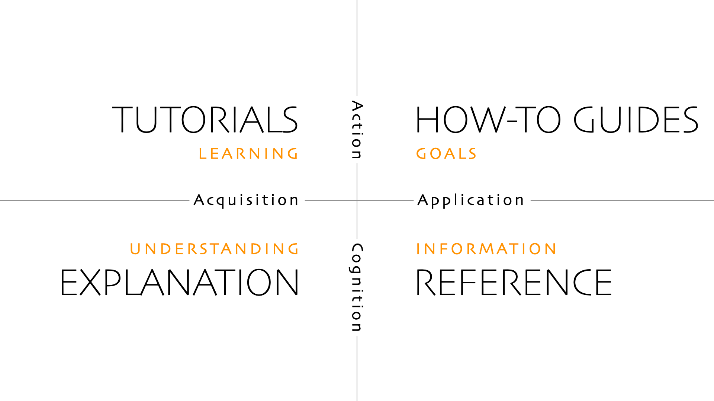

Antes de empezar...
Navega usando
espacio
Documenta tu proyecto
con herramientas open source
Santos Gallegos
-
stsewd@proton.me
@stsewd
$ WHOAMI
Hola, soy Santos Gallegos, soy desarrollador web, y hacker ético.
He contribuido a proyectos open source,
y he reportado vulnerabilidades en varios proyectos como Neovim,
GitPython, django-allauth, Read the Docs, Sentry, y más.
Principalmente trabajo con Python en el backend.
Actualmente trabajo en Read the Docs, soy core developer.
De vez en cuando también hago bug bounty.
Me pueden encontrar en Internet como @stsewd.
Quizás me recuerden de charlas relacionadas a la importancia de contribuir a proyectos open source,
o tal vez no, porque no suelen haber muchas personas interesadas en esas charlas.
Así que hoy les vengo a hablar sobre herramientas que pueden usar para documentar sus proyectos.
Escogiendo tus herramientas
Lo que primero necesitamos es escoger nuestras herramientas.
Mi experiencia mayormente ha sido con la Web, Python, y Sphinx, así que gran parte de la charla será enfocada en eso.
Generador de documentación
Genera documentación a partir de una fuente.
MkDocs
Sphinx
Doxygen
Asciidoctor
Docusaurus
Una de las herramientas importantes es el generador de documentación.
Este se encarga de generar nuestra documentación a partir de una fuente.
Lo que genera es usualmente un sitio web estático, HTML, o un PDF.
La fuente puede ser un archivo de texto, código, una especificación.
Formato de la documentación
El formato en el que está escrita la fuente de la documentación.
Markdown
reStructuredText
AsciiDoc
El formato de la documentación es el formato en el que está escrita la fuente de la documentación.
Algunos generadores de documentación soportan varios formatos.
Entre los más populares están Markdown y reStructuredText.
Escogiendo tus herramientas
Como vimos, las opciones no son pocas,
no es tan fácil como escoger entre dos opciones.
Sino algo más parecido a esto,
muchas opciones de varios colores y sabores.
Escogiendo tus herramientas
Entonces, cuál es la opción que debería escoger?
Y como buen señor developer, la respuesta es: depende.
Escogiendo tus herramientas
Ecosistema/lenguaje
Necesidades
Tamaño de tu proyecto
La respuesta depende de varios factores.
Cada ecosistema tiene sus propias herramientas, convenciones, estándares
o herramientas populares en su comunidad.
Necesitas generar documentación a partir de tu código, una especificación,
o a partir de archivos de texto? o una combinación de estos?
Tu documentación va dirigida a desarrolladores o a usuarios finales? o ambos?
Si tu proyecto es muy específico, o es un simple script,
un simple archivo README.txt puede ser suficiente.
Si tu proyecto es grande, o está dividido en varios proyectos,
y necesitas generar documentación para cada uno de ellos,
y entrelazarlos.
Ejemplo: Rust
https://doc.rust-lang.org/rustdoc/
Veamos un par de ejemplos.
Si estás trabajando en Rust, probablemente deberías usar el generador de documentación
incluído en el lenguaje, `rustdoc`.
Ejemplo: Python
O si estás usando Python,
este no tiene un generador de documentación incluído,
pero las opciones más populares son Sphinx y MkDocs.
Sphinx tiene mayor integración con el ecosistema de Python,
y varias cosas vienen incluidas por defecto.
Mientras tanto que MkDocs es más simple,
pero requiere de varias extensiones externas para alcanzar la misma funcionalidad que Sphinx.
Ejemplo: CLI
$ man man-pages
$ man groff
Si estás escribiendo un programa que funciona desde la línea de comandos,
así que es conveniente que tu documentación esté disponible desde la línea de comandos.
Ya sea algo simple que los usuarios puedan acceder con la opción `--help`,
o algo más complejo como un manpage que los usuarios pueden leer con el comando `man`.
Ejemplo: API
https://www.openapis.org/
O si estás escribiendo una API,
probablemente deberías usar un formato estándar como OpenAPI.
Varios de los frameworks web usados para crear APIs
tienen soporte para generar una especificación OpenAPI a partir de tu código.
Formato
Ya tocamos el tema de los generadores de documentación,
ahora viene un tema más controversial...
Qué formato de texto usar?
Markdown
El formato más popular es Markdown, está en todo lado, lo encontramos hasta en la sopa.
Probablemente la mayoría de ustedes ya lo conocen,
o tal vez hasta lo han usando sin darse cuenta.
Markdown
# Título
Texto *cursivo*, **negrita** y ~~tachado~~.
[Enlace](https://example.com).
## Subtítulo
- Lista 1
- Lista 2

```python
print("Hola mundo")
```
https://commonmark.org/
Así es como luce Markdown.
Markdown es fácil de leer, escribir, y aprender.
Como les mencionaba, este formato está en todo lado
hasta las apps de mensajería soportan ciertos elementos de Markdown...
y eso es un problema.
Markdown
Y es que el estándar original se queda corto cuando necesitas cosas más complejas o extenderlo.
Por lo que cada quien terminó implementado su propia versión de Markdown,
por lo que ahora tenemos un montón de variantes de Markdown (flavors).
Tenemos el estándar de CommonMark, que es el más usado,
pero luego tenemos GitHub Flavored Markdown,
GitLab Flavored Markdown, Pandoc Markdown,
y un montón de variantes más.
reStructuredText
Título
======
Texto *cursivo*, **negrita**.
`Enlace <https://example.com>`__.
Ver más en :doc:`/api`.
Subtítulo
---------
- Lista 1
- Lista 2
.. image:: https://example.com/image.png
.. code:: python
print("Hola mundo")
https://docutils.sourceforge.io/rst.html
La otra opción popular, sobre todo en el ecosistema de Python, es reStructuredText.
El cual tiene un estándar definido, y fue diseñado para ser extensible.
Tampoco es que sea perfecto, no es tan ubicuo como Markdown,
lo que hace que su sintaxis no sea tan familiar para la mayoría de los usuarios.
Al ser extensible, tiene más conceptos que aprender, como roles y directivas.
Generadores y formatos
MkDocs: Markdown
Sphinx: reStructuredText, Markdown, MyST
Jupyter Book: MyST
Ya conocemos las opciones que tenemos de generadores de documentación y formatos.
Pero usualmente el formato a usar depende del generador de documentación.
MyST está ahí, pero no hablamos es ese formato...
Y bueno, se acuerdan de que cada cierto tiempo alguien tiene la idea de
crear un nuevo flavor de Markdown que sea mejor que el resto?
Así que MySt es un flavor de Markdown, se reproducen como framweorks de JavaScript.
Escribiendo documentación
Ya tenemos las herramientas a usar,
ahora viene lo divertido, escribir la documentación.
Y para escribir la documentación necesitamos dos cosas:
una manera de escribir el texto, y una manera de editarlo.
Teclado
La manera más cómoda de escribir es usando un teclado.
Personalmente me gusta usar un teclado mecánico,
un ducky one mini es una buena opción.
Pero cualquier teclado sirve, hoy no vamos a hablar de teclados...
Es un tema muy controversial y no quiero entrar en eso.
Editor
Lo que si vamos a hablar es de un tema menos controversial,
editores de texto.
Mentira, cualquier editor de texto que tenga soporte para el formato que elegiste
es una buena opción.
La magia de Markdown y reStructuredText es que son fáciles de leer y escribir,
y son agnósticos al editor que uses.
Editor
Pero si voy a hacer un par de recomendaciones
de herramientas que puedes usar en tu editor
para que tengas una mejor experiencia escribiendo documentación.
LSP
Language server protocol
Autocompletado
Errores
Documentación (hover)
Go to definition
Refactoring
LSP, o language server protocol es lo que provee a tu editor
de todos estos features.
Y lo chévere es que es agnóstico del editor que uses,
mientras que tu editor tenga soporte para LSP, lo único que necesitas
hacer es instalar el server y listo.
Pero tal vez se pregunten, estos escribiendo documentación,
no código, de verdad necesito todo esto?
Puede que no, pero puede que mejore tu experiencia mientras
escribes documentation.
LSP editor support
Mientras que tu editor tenga soporte para LSP builtin,
usar el LSP no es más que instalar el server y decirle a tu editor donde encontrarlo.
O incluso si tu editor no tiene soporte para LSP por defecto, probablemente exista un plugin
que puedas usar.
Tree-sitter
Syntax highlighting
Resaltado más preciso (y rápido)
Resaltado basado en scopes y contexto
Injections (resaltado de bloques de código)
Indentación
Tree-sitter es otra herramienta agnóstica del editor que uses.
Y provee resaltado de sintáxis, básicamente le da color a tu texto.
Lo que más me gusta de tree-sitter para escribir documentación
es que provee injections, que es injectar un lenguaje dentro de de otro.
Úitl para bloques de código.
tree-sitter-markdown
Demo: Neovim, BTW
tree-sitter-rst
Demo: Neovim, BTW
tree-sitter editor support
Al principio les dije que tree-sitter es agnóstico
del editor que uses, pero a diferencia de LSP no
es muy común encontrarlo en todos los editores.
Y con eso me refiero a que gran parte los soportan,
a excepción de vscode...
Editor
Otras recomendaciones
Checker de ortografía/gramática
Diccionario
Corrector de estilo (https://vale.sh/ )
AI como GH copilot, or ChatGPT
Otras recomendaciones son. No les digo nombres específicos,
ya que es muy fácil encontrar plugins que proveen esto para sus editores,
o pueda que hasta incluyan estas cosas por defecto.
Y claro, como fue obligatorio incluir una sección de AI en todas las charlas
de este FliSoL, aquí va la mía.
No mentira, es broma, no me baneen de la siguiente edición.
Otras recomendaciones
Diatáxis
Framework para organizar tu documentación
https://diataxis.fr/

Otra recommendación es diataxis,
que provee un framework para organizar tu documentación.
Y aquí framework no se refiere a algo como django,
sino a una serie de directivas que debes seguir al escribir y organizar tu documentación.
Otras recomendaciones
Semantic line breaks
Separa las líneas por sentido semántico, no por un límite de caracteres.
https://rhodesmill.org/brandon/2012/one-sentence-per-line/
Otra recommendación muy útil de como escribir tu documentación
es de no separar tus líneas de manera arbitraria o por un límite de caracteres.
Si no hacerlo por sentido semántico,
es decir cada oración por línea.
Veamos un ejemplo para que quede más claro a qué se refiere esto.
Line breaks arbitrarios
Aquí tenemos un diff de los cambios realizados a un párrafo.
Este es un extracto de wikipedia sobre el flisol.
En este párrafo hice un cambio del texto "números.." por "este número...".
Pero ya que en este ejemplo se está separando las líneas por un límite de caracteres,
este pequeño cambio introduce otros cambios en todo el párrafo,
y queda claro qué se cambió exactamente.
Si, el texto se ve más uniforme,
pero imaginen hacer un review de varios cambios...
El cambio en una sola palabra puede introducir varios cambios.
Semantic line breaks
Acá tenemos el mismo párrafo con el mismo cambio.
Pero en este caso cada linea es una oración,
y si hay un cambio en una oración el diff es my claro
sobre donde está el cambio, las demás líneas quedan intactas.
Puede que no se vea tan uniforme como el ejemplo anterior,
pero es hasta mucho más fácil de leer.
Hosting
Ya tenemos nuestra documentación escrita,
ya solo nos falta exponerla al mundo.
Y qué mejor manera que hacerlo usando la web.
Hosting
HTTP server
Cualquier herramienta que hayas escogido,
probablemente te de como resultado varios archivos HTML.
Así que los puedes hostear en cualquier servidor que
soporte archivos estáticos.
A menos que hayas escogido alguna herramienta
que requiera server side rendering y esas cosas...
Hosting
Cloud services
O también puedes usar servicios como GitHub pages,
o GitLab pages, Cloudflare pages, Netlify, Read the Docs.
Hosting
¿Cuál escoger?
Al igual que las otras herramientas,
el hosting a escoger depende de tus necesidades y proyecto.
Git service as documentation hosting
docs/index.md
Y si no quieres lidear con todo esto,
tienes la opción de simplemente crear una carpeta docs
en tu repositorio, y dejar que el serivicio que uses
para hostear tu código se encargue de renderizar la documentación.
README.md
Una simple documentación es mejor que no documentación.
Y bueno, antes de terminar igual quiero promover la importancia de contribuir
a proyectos open source, y que mejor manera que contribuir con documentación.
Ahí les dejo el enlace a esta presentación y a mi blog donde a veces escribo cosas.
Y también estan las vulnerabilidades que he reportado y que son públicas.
Eso fue todo por hoy, espero hayan aprendido algo nuevo. Ahora vamos a las
preguntas. Si algo no se entendió, es probablemente mi culpa, no lo expliqué
bien, así que siéntanse libres de preguntar algo incluso si ya lo
di en la presentación, y lo voy a tratar de aclarar.
También si quieren luego podemos charla sobre más cosas a fondo.